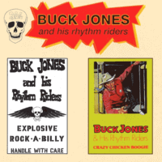

Buck Jones and his Rhythm Riders - Crazy Chicken Boogie / Explosive Rock-A-Billy (Compilation Album, 1995)
01 - Hey Mr. (Sam) Phillips (2:35)
02 - Pink And Black (2:01)
03 - Two Timin' Lucy (1:52)
04 - Rockin' Daddy (1:55)
05 - Picking My Chicken (2:08)
06 - Let's Go Boppin' Tonight (2:10)
07 - You're The Cause Of It All (2:04)
08 - Crazy Chicken Boogie (2:13)
09 - Ain't She Sweet (1:57)
10 - Real Hot Hen (1:58)
11 - Drinkin' Wine, Spo-Dee-O-Dee (2:21)
12 - Bar-B-Q (1:53)
13 - Rhythm Boogie (2:10)
14 - One Horse Town (2:12)
Explosive Rock-A-Billy15 - Rockabilly Fever (2:15)
16 - Johnny Flight Boogie (2:27)
17 - Be Boppin Baby (2:22)
18 - Don't Touch My Money (1:56)
19 - Grazy Little Mama (2:03)
20 - Just Wait Honey (2:18)
21 - Panic In The Henhouse (1:55)
22 - Alabama Wild Cat (2:08)
23 - Let's Roll (1:45)
24 - Don't Cry Lucille (1:47)
25 - All Alone On The Road (2:22)
26 - Brown Eyed Woman (1:53)
27 - Reptile Woman (1:55)
28 - Ramblin'n' Gamblin (2:08)
29 - Hey Driver (2:17)
30 - Kentucky Rose (3:19)
31 - Washin' Machine Boogie (2:42)
additional bonus tracks32 - Teddy Jive (1:49)
33 - Big Fool (2:31)
© My Way Records :: [WAY CD 30]
Notes
Finland.
Two releases (Crazy Chicken Boogie, 1979 / Explosive Rock-A-Billy, 1980) in one CD (1995) with two additional bonus tracks
My experience is based on digital release of these recordings (2015)
reference information: Discogs®
Review
056/366 (Project 366)
Revival sound of Teddy Boy Rock-A-Billy. Full of rockin' and rollin' drive, energy and sensations.